AnyPortrait > 메뉴얼 > Shader Graph로 재질 작성하기
Shader Graph로 재질 작성하기
1.2.2
Shader Graph (쉐이더 그래프)는 노드 기반의 툴을 이용하여 쉐이더를 만들 수 있는 기능입니다.
유니티 2018에서 소개된 이 기능은 LWRP와 HDRP에서 동작하기 때문에 호환성이 좋은 특징이 있습니다.
Shader Graph를 이용하여 커스텀 쉐이더를 규칙에 맞게 만들면 AnyPortrait와도 호환되는 재질을 만들 수 있습니다.
이 페이지에서는 Shader Graph를 이용하여 커스텀 쉐이더를 만들고 재질로 적용하는 방법을 설명합니다.
추가적인 정보는 다음의 페이지를 참고해보시는 것을 권장합니다.
- 커스텀 쉐이더
- Shader Graph (유니티 공식 페이지 / 영문)
- 재질 라이브러리
참고
이 페이지에서 설명된 쉐이더들은 기본적인 쉐이더 코드의 내용을 그래프 형태로 변환한 것입니다.
기본적인 규칙만 따르면 여러분들이 자유롭게 쉐이더를 제작하실 수 있습니다.

Shader Graph 에셋을 만들어봅시다.
Create > Shader > 2D Renderer에서 두가지 방식의 Shader Graph 에셋을 새로 만들 수 있습니다.
이 예제에서는 Sprite Lit Graph (Experimental) 방식을 이용해보겠습니다.
참고
이 예제에서는 LWRP 2D과 호환되는 쉐이더를 만들었습니다.
다른 종류의 그래프를 만드는 것도 가능합니다.

생성된 Shader Graph 에셋을 더블 클릭하면 그래프 툴이 열립니다.
현재는 출력 노드인 Sprite Lit Master 노드만 있는 상태입니다.
(1) "+" 버튼을 누릅니다.

(2) 프로퍼티의 타입을 선택합니다. 여기서는 먼저 Texture2D를 선택합니다.
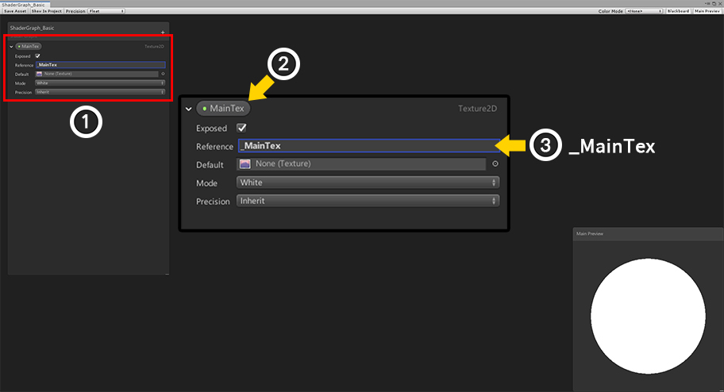
(1) 새로운 프로퍼티가 추가되었습니다.
(2) 프로퍼티의 이름을 "MainTex"로 설정합니다. 프로퍼티의 이름은 동일하지 않아도 됩니다. (중요한 항목이 아닙니다.)
(3) Reference의 이름을 "_MainTex"로 설정합니다. 이 값은 쉐이더 상에서의 프로퍼티 이름이 되므로 이 예제와 동일해야합니다.

(1) 같은 방식으로 위와 같이 Vector4 타입의 프로퍼티와 Color 타입의 프로퍼티를 추가합니다.
(2) 두번째 프로퍼티를 다음과 같이 설정합니다.
- Reference : _MainTex_ST
- 타입 : Vector4
- 기본값 : (1, 1, 0, 0)
(3) 세번째 프로퍼티를 다음과 같이 설정합니다.
- Reference : _Color
- 타입 : Color
- 기본값 : (0.5, 0.5, 0.5, 1)

AnyPortrait의 커스텀 쉐이더 규칙에 맞게 기본적인 쉐이더를 작성하였습니다.
(이미지를 클릭하면 확대하여 보실 수 있습니다.)

텍스쳐를 샘플링하여 색상을 만드는 노드들입니다.
기본의 UV를 사용할 수도 있지만, MainTex ST를 이용하면 UV의 타일링 등을 추가적으로 할 수 있습니다.
MainTex ST의 값이 (1, 1, 0, 0)이 아니라면 정상적으로 렌더링되지 않을 수 있습니다.

텍스쳐의 색상과 _Color 프로퍼티의 색상을 조합하는 노드들입니다.
AnyPortrait는 색상 연산시 2X Multiply 방식을 사용합니다.
그래서 이 그래프에서도 _Color의 RGB값이 2와 곱해진 후 텍스쳐의 색상과 곱해집니다.

알파 채널의 값은 텍스쳐의 알파값과 _Color의 알파값을 곱하는 것으로 만듭니다.
완성된 색상은 Sprite Lit Master의 Color에 연결됩니다.

이제 이 Shader Graph를 AnyPortrait에 적용해봅시다.
AnyPortrait 에디터를 열고 캐릭터를 선택합니다.
(1) Root Unit을 선택합니다.
(2) Material Library 버튼을 누릅니다.
(3) Make Material Set 버튼을 누릅니다.
(4) 새로운 재질 세트는 프리셋을 이용하지 않을 것이므로 "(None)"을 선택합니다.
(5) Select 버튼을 누릅니다.

(1) 생성된 재질 세트를 선택합니다.
(2) 재질 세트의 이름과 아이콘을 설정하고, Default Material 버튼을 눌러서 기본 재질로 설정합니다.

Shader Graph로 만든 쉐이더를 입력해봅시다.
(3) Color Space : Gamma > Basic Rendering > Alpha Blend 항목에 앞서 만든 쉐이더를 할당합니다.

Bake를 한 후 유니티 씬에서 확인해봅시다.

Shader Graph로 만든 재질이 적용된 것을 볼 수 있습니다.
클리핑 메시를 위한 Shader Graph 만들기
클리핑 메시를 렌더링하기 위해서는 두종류의 쉐이더가 더 필요합니다.
- Clipped 쉐이더
- Alpha Mask 쉐이더
Shader Graph로 이 쉐이더들을 만들면 클리핑 메시도 렌더링할 수 있습니다.
먼저 Clipped 쉐이더를 만들어봅시다.

앞서 만든 쉐이더를 복제합니다.

(1) 클리핑 렌더링을 위한 Texture2D 타입과 Vector4 타입의 프로퍼티를 다음과 같이 추가합니다.
(2) 마스크 텍스쳐의 입력을 받을 프로퍼티를 다음과 같이 설정합니다.
- Reference : _MaskTex
- 타입 : Texture2D
(3) 마스크 텍스쳐의 위치와 크기에 관련된 프로퍼티를 다음과 같이 설정합니다.
- Reference : _MaskScreenSpaceOffset
- 타입 : Vector4
- 기본값 : (0, 0, 0, 1)
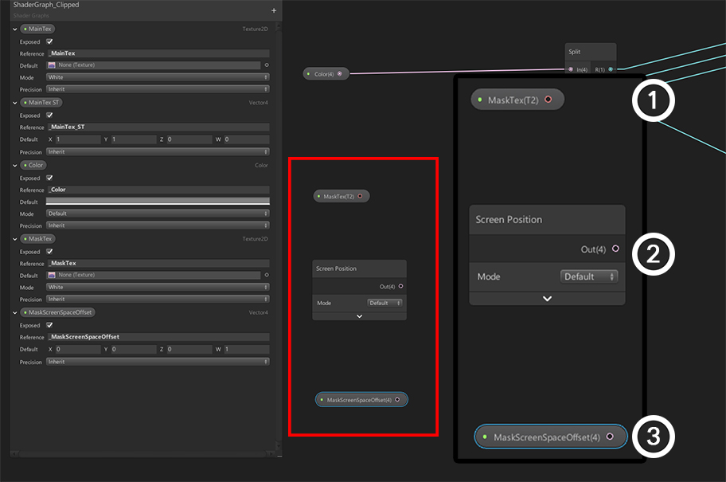
위에서 작성된 Shader Graph를 복제했으므로 기본적인 렌더링을 위한 그래프는 완성된 상태입니다.
여기에 클리핑에 관련된 노드를 추가해봅시다.
먼저 다음의 3개의 노드를 추가합니다.
(1) MaskTex 프로퍼티
(2) Screen Position 노드 (Default 모드)
(3) MaskScreenSpaceOffset 프로퍼티

기존의 그래프에 클리핑과 관련된 노드들을 추가하여 Shader Graph를 완성했습니다.
그래프의 아래쪽의 노드들과 알파 관련 연산 노드들이 추가, 수정된 것입니다.
(이미지를 클릭하면 확대하여 보실 수 있습니다.)
클리핑과 관련된 노드들을 살펴봅시다.

Screen Position과 MaskScreenSpaceOffset 프로퍼티를 이용하여 마스크 텍스쳐를 위한 UV를 계산하는 로직입니다.
꽤 복잡하게 구성되어 있는데, 이것은 AnyPortrait의 클리핑 메시의 최적화와 관련되어 있기 때문입니다.
이 부분은 수정하지 말고 그대로 작성하시면 됩니다.
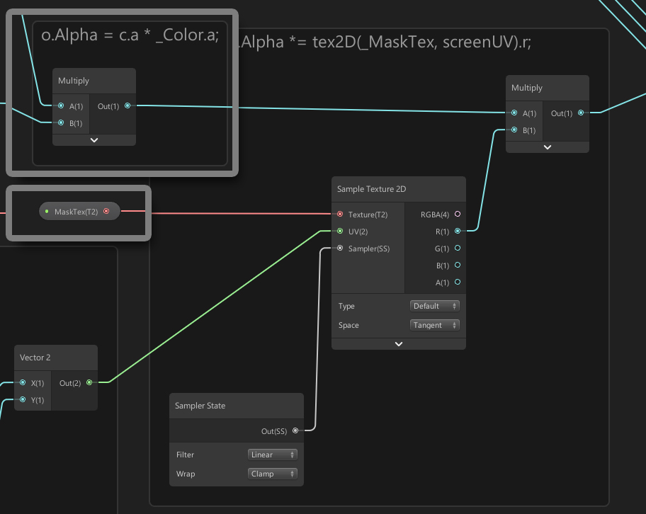
마스크 텍스쳐와 Screen Position과 MaskScreenSpaceOffset를 이용하여 만든 UV를 이용하여 알파 값을 수정하는 노드들입니다.
이 노드들을 추가해야 마스크 텍스쳐에 의해서 이미지가 투명해집니다.

클리핑 렌더링의 마스크 텍스쳐를 생성하는 Alpha Mask 쉐이더를 만들어봅시다.
AnyPortrait는 R 채널을 마스크 데이터로 사용합니다.
R 채널의 특성상 빛의 영향을 받아서 색이 바뀔 수 있습니다.
따라서 빛의 영향을 받지 않는 Sprite Unlit Graph를 선택하여 새로운 Shader Graph를 생성합니다.

생성된 Shader Graph를 더블 클릭하여 그래프 툴을 엽니다.
위와 같이 3개의 프로퍼티들을 추가합니다.
이 프로퍼티들은 앞서 설명한 프로퍼티들과 동일합니다.

마스크 텍스쳐를 생성하는 Shader Graph를 작성해봅시다.
위의 Shader Graph들과 매우 유사하며, 알파값에 관련된 노드들만 다른 것을 보실 수 있습니다.
(이미지를 클릭하면 확대하여 보실 수 있습니다.)

AnyPortrait의 마스크 텍스쳐는 알파 데이터를 R 채널에 저장합니다.
_MainTex의 색상과 _Color의 색상의 A 채널의 값이 R 채널로 전달되는 것을 위 이미지에서 확인하실 수 있습니다.
그 외의 그래프는 기존과 동일합니다.

클리핑 렌더링을 위한 재질을 만들어봅시다.
재질 라이브러리를 다시 열고 위 이미지와 같이 작성한 쉐이더를 설정합니다.
(1) Basic 쉐이더 : Color Space : Gamma > Basic Rendering > Alpha Blend
(2) Clipped 쉐이더 : Color Space : Gamma > Clipped Rendering > Alpha Blend
(3) Alpha Mask 쉐이더 : Alpha Mask
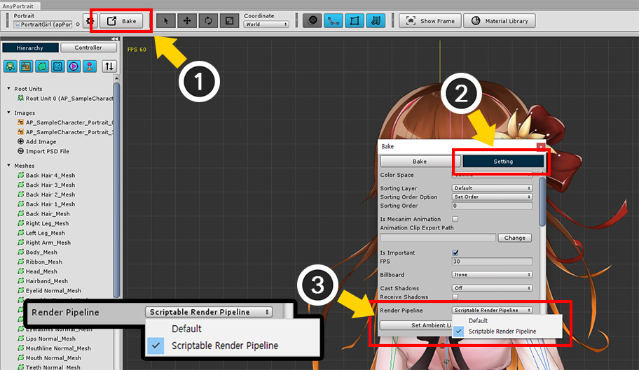
만약 LWRP 또는 LWRP 2D 환경에서 렌더링을 하고자 한다면, 기본적인 설정으로는 클리핑 메시가 정상적으로 렌더링되지 않습니다.
이것은 쉐이더의 문제가 아닌, 유니티 카메라 처리 방식의 차이입니다.
따라서 Shader Graph로 범용적인 쉐이더를 만들어도 문제가 해결되지 않습니다.
다음의 방법까지 시도해야 클리핑 메시가 정상적으로 렌더링됩니다.
(1) Bake 다이얼로그를 엽니다.
(2) Setting 탭을 선택합니다.
(3) Render Pipeline 항목의 값을 현재 그래픽스 옵션에 맞게 바꿉니다. 그래픽 설정이 LWRP 또는 LWRP 2D로 되어있다면 Scriptable Render Pipeline으로 변경합니다. (반대의 경우는 Default로 설정합니다.)
(Unity 2019부터 지원되는 옵션입니다.)

이제 Bake를 하고 유니티 씬에서 확인해보면 캐릭터가 정상적으로 렌더링되는 것을 볼 수 있습니다.
Shader Graph의 사용에 관하여
Shader Graph로 작성한 쉐이더들은 기존의 렌더링 방식과 새로운 렌더링 방식을 모두 포괄하는 높은 범용성을 가지고 있습니다.
따라서 LWRP와 같은 SRP (Scriptable Render Pipeline) 방식을 이용하시는 경우 Shader Graph를 사용해야합니다.
AnyPortrait도 Shader Graph를 지원하지만 다음과 같은 이슈가 있습니다.
1. Shader Graph를 이용하는 경우 Alpha Blend 외의 블렌드 모드를 지원하지 않습니다.
: 이 점은 Shader Graph가 개선되거나 AnyPortrait가 개선되어야 하는 문제입니다.
현재 이 문제를 해결하기 위해서는, Shader Graph로 작성된 쉐이더의 코드를 직접 다시 수정해야합니다.
AnyPortrait에서 제공하는 LWRP 2D 프리셋 패키지 (관련 페이지)는 Shader Graph로 작성되었으며, 저희가 직접 쉐이더 코드를 수정하여 최적화 및 블렌드 모드 지원이 가능해졌습니다.
2. LWRP를 사용하지 않는다면 Surface Shader를 권장합니다.
: AnyPortrait는 유니티 5.5부터 사용가능하도록 개발되었습니다.
따라서 해당 버전을 기준으로 Surface Shader로 렌더링되도록 작성되었습니다.
유니티의 렌더링 방식이 버전에 따라 계속 바뀌고 있기 때문에, 렌더링 관련 이슈를 피하기 위해서는 Surface Shader가 권장됩니다.
다만 이러한 정책은 유니티 엔진의 개발 과정에 따라 바뀔 수 있으며, AnyPortrait는 가능한 최신의 기술이 사용될 수 있도록 지원할 것입니다.
커스텀 재질 만들기 (URP)
커스텀 쉐이더를 작성하는 것처럼, Shader Graph를 이용하여 커스텀 재질을 만들 수 있습니다.
여기서는 간단히 노멀맵 (Normal Map) 또는 범프맵 (Bump Map)을 이용하는 과정을 설명합니다.
이 페이지의 설명을 응용하여 다양한 렌더링 기법을 적용해보세요.
참고
이 페이지에서는 노멀맵과 범프맵이라는 용어를 혼용하여 표기합니다.
이 설명은 Unity 2021을 바탕으로 작성되었으므로 유니티 버전에 따라 설정이나 UI가 다를 수 있습니다.
또한, 이 예제는 URP (Universal Render Pipeline)의 2D Renderer가 적용된 환경에서 동작하도록 만들어졌습니다.
렌더링 환경에 따라 Shader Graph를 적절히 설정하여 사용하세요.

2개의 텍스쳐 이미지를 준비했습니다.
재질의 표면의 굴곡을 나타내는 노멀맵 (Normal Map)과 기본적인 색상 텍스쳐입니다.
다음 단계는 Shader Graph를 작성하는 것입니다.
새로운 Shader Graph를 만들거나 기존의 에셋을 복제한 후 수정하면 됩니다.

새로운 Shader Graph를 추가하는 방법입니다.
이 예제에서는 URP 환경에서 빛의 영향을 받는 재질을 만들고자 합니다.
따라서 Asset 화면에서 "Create > Shader Graph > URP > Sprite Lit Shader Graph"를 선택합니다.
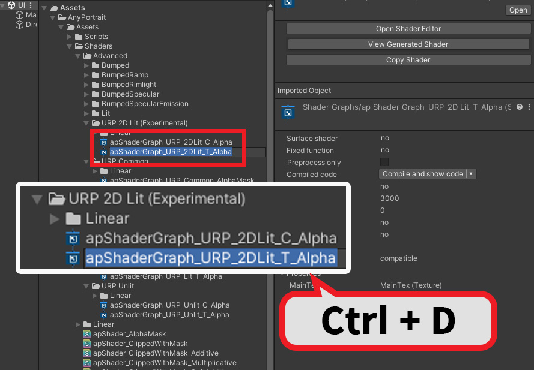
또는 AnyPortrait에서 제공하는 Shader Graph를 복제하여 수정할 수도 있습니다.
재질 라이브러리 (관련 페이지)에서 제공하는 URP Presets를 설치하면 몇개의 Shader Graph들이 추가됩니다.
여기서 Assets > AnyPortrait > Assets > Shaders > Advanced > URP 2D Lit (Experimental) 폴더의 두개의 Shader Graph를 복제하여 수정하면 됩니다.
각각 클리핑 되는 메시에 적용되는 것과 일반 메시에 적용되는 것입니다.
원칙적으로는 두개의 Shader Graph를 복제하여 수정해야하지만, 여기서는 일반 메시에 적용되는 Shader Graph만 복제( Ctrl+D )하여 수정해봅시다.

새로 생성하거나 복제된 Shader Graph의 이름을 설정하고, Shader Graph의 설정을 확인해봅시다.
Sprite Lit 재질이어야 제대로된 범프 재질을 만들 수 있을 것입니다.

(1) 앞선 설명을 바탕으로 필수적인 Shader Graph를 작성합니다.
(2) Texture 2D 타입의 새로운 속성을 추가합니다.
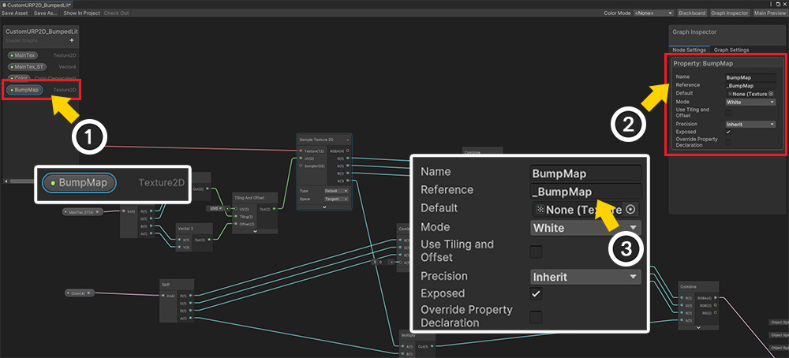
(1) 새로운 텍스쳐 속성의 이름을 BumpMap으로 설정했습니다.
(2) BumpMap 속성의 설정을 확인합니다.
(3) Reference의 값을 _BumpMap으로 설정합니다.
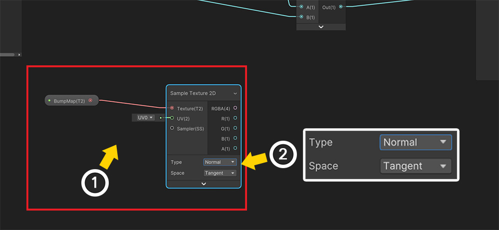
이제 Shader Graph를 수정해봅시다.
(1) BumpMap 속성을 위와같이 드래그하여 노드로서 배치합니다.
(2) Sample Texture 2D 노드를 추가하여 연결합니다. 이때, Type이 Normal이어야 하며, Space의 값은 Tangent여야 합니다.

기존의 Shader Graph에서의 Tiling And Offset의 결과값을 추가된 Sample Texture 2D의 UV에 연결합니다.

(1) 저희가 준비한 노멀맵을 적용하면 Y축 각도가 반전되는 문제가 있었습니다.
이때는 위와 같이 Flip 노드를 이용하여 Green의 값을 반전하도록 설정하면 됩니다.
(문제가 발생하지 않는다면 Flip 노드를 이용할 필요는 없습니다.)
(2) 앞의 BumpMap > Sample Texture 2D로 이어지는 노드의 값을 Flip 노드를 경유하여 Normal (Tangent Space)에 연결합니다.
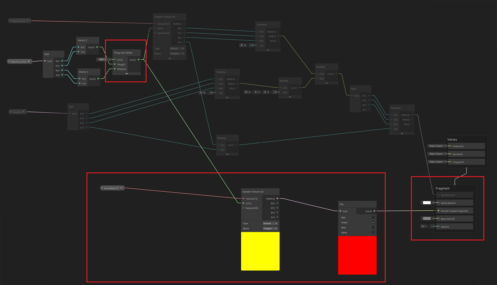
완성된 Shader Graph는 위와 같습니다.
이미지를 클릭하면 큰 이미지로 확인해볼 수 있습니다.
BumpMap 속성을 포함하여 추가된 노드들을 확인해보세요.

이제 렌더링 테스트를 위한 AnyPortrait 캐릭터를 만들 차례입니다.
준비했던 이미지 중 색상 텍스쳐를 이용하여 캐릭터를 만듭니다.

(1) 루트 유닛을 선택한 화면에서 Material Library 버튼을 누릅니다.
(2) URP Presets를 설치했다면 URP Unlit, URP Lit, URP 2D Lit 프리셋이 추가되어 있을 것입니다.
(이 프리셋을 설정하고 활용하는 방법에 대해서는 관련 페이지를 확인해주세요.)
(3) 새로운 재질 세트를 만들기 위해 Make Material Set 버튼을 누릅니다.
(4) 빛이 적용되는 재질을 만들 것이므로 URP 2D Lit 프리셋을 선택하고 생성합니다.

(1) 생성된 재질 세트를 선택합니다.
(2) Default Material 버튼을 눌러서 ON 상태로 변경합니다.
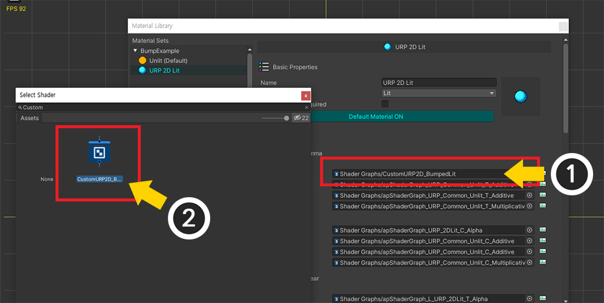
Shader Graph를 이용하여 작성한 커스텀 쉐이더를 적용해볼 차례입니다.
가능하면 모든 종류(블렌딩, 클리핑, 색상 공간)에 대한 Shader Graph를 만들고 하나씩 적용해야하지만, 여기서는 가장 기본이 되는 것만 교체해봅시다.
(1) 1. Color Space : Gamma > Basic Rendering > Alpha Blend의 Shader Graph를 (2) 앞서 작성한 Shader Graph로 변경합니다.
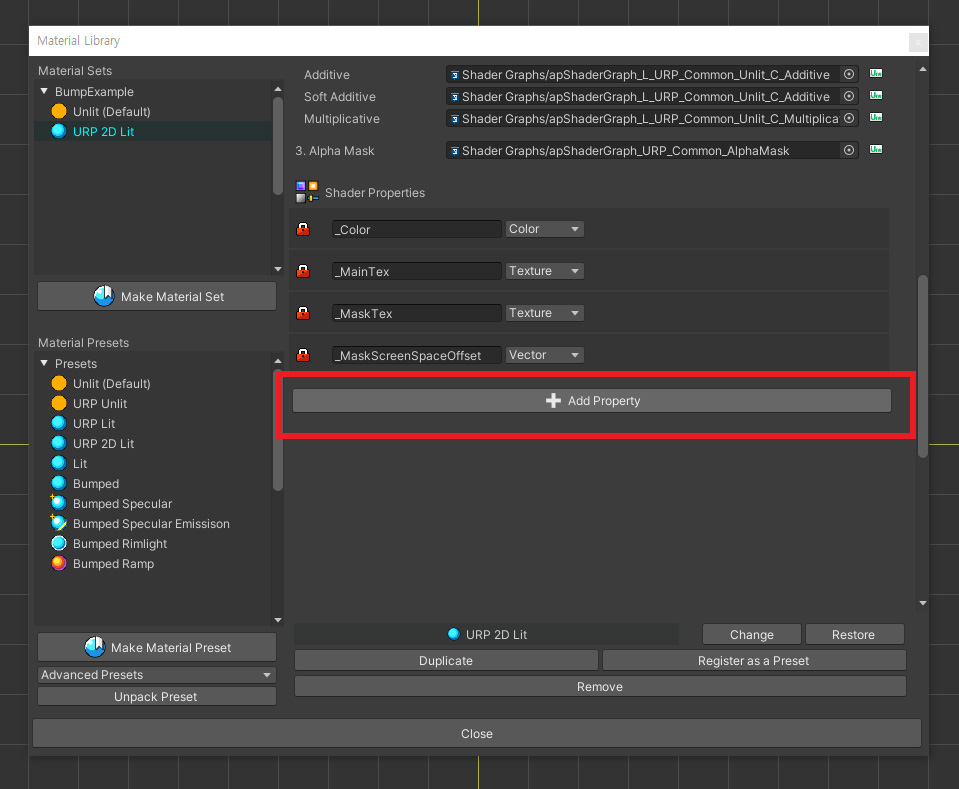
노멀맵 텍스쳐를 적용해야 하므로 속성을 추가해야합니다.
화면을 아래로 스크롤하여 Add Property 버튼을 누릅니다.
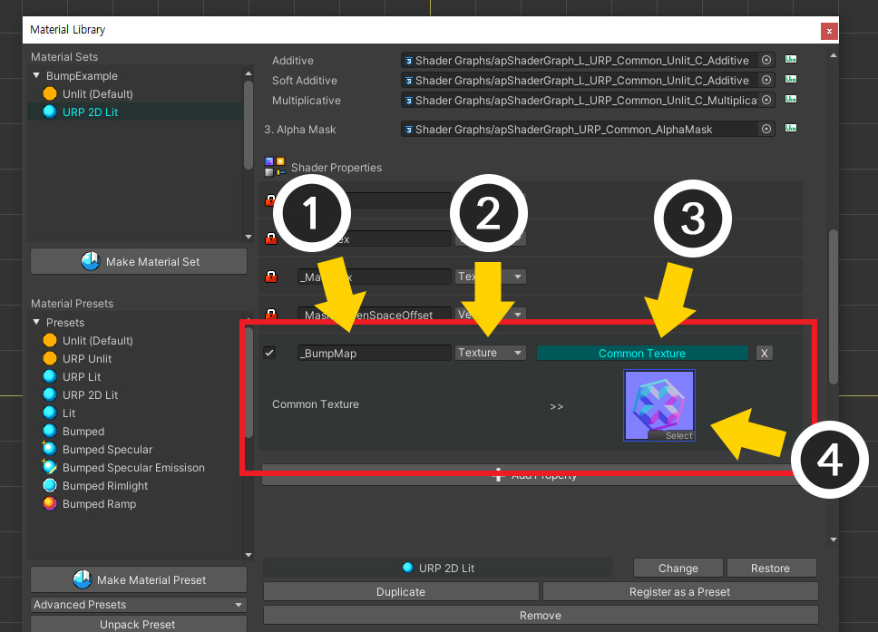
(1) 추가된 속성을 이름을 앞에서 설정했던 "_BumpMap"으로 설정합니다.
(2) 타입을 Texture로 변경합니다.
(3) 공통 텍스쳐를 사용할지 여부를 선택합니다.
(4) 준비했던 노멀맵 텍스쳐를 지정합니다.

Bake를 실행하고 유니티 씬으로 돌아갑니다.
URP 2D에서 사용되는 "Light 2D"들을 배치하여 공간에 빛을 추가합니다.
하지만 노멀맵이 적용되지 않아 보입니다.

(1) 빛(Light 2D)을 선택합니다.
(2) 속성 중 Normal Maps > Quality의 값이 Disabled이면 메시를 렌더링 할 때 노멀 값이 처리되지 않습니다.
이 속성을 Fast나 Accurate로 변경합니다.
(3) 이제 BumpMap에 지정했던 텍스쳐가 적용되어 렌더링되는 것을 볼 수 있습니다.
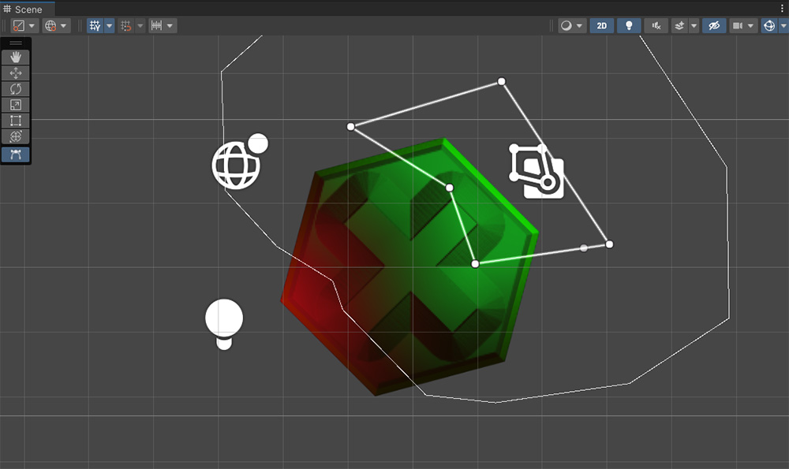
위와 같이 빛들을 추가하여 그럴싸한 렌더링 결과를 만들 수 있습니다.
여기서는 URP 2D 환경에서 노멀맵을 추가하는 Lit 재질을 만드는 간단한 예시를 설명했습니다.
이 과정을 참고하여 다양한 렌더링 기법들을 여러분의 캐릭터에 적용해보세요!